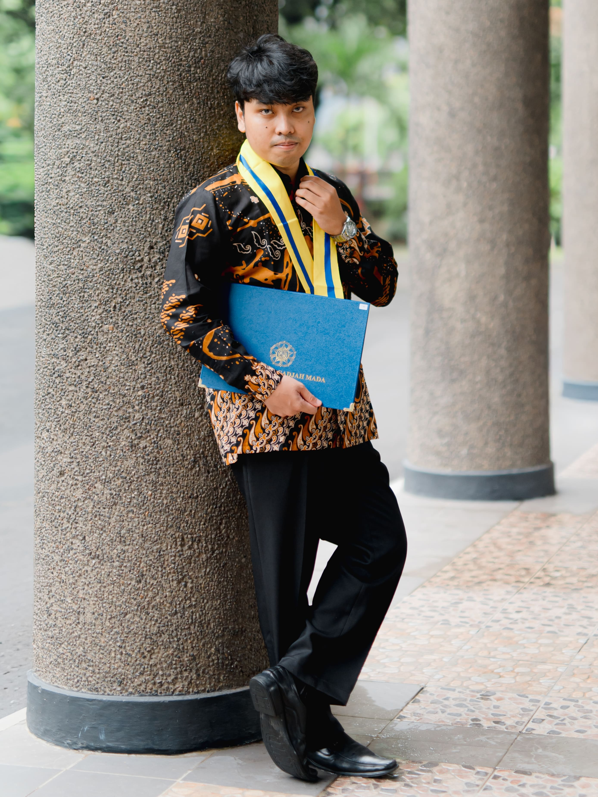

SITUS WEB PERSONAL
Fadil Irsyad Muhammad
Aspiring Data Analyst

Tentang Saya
Profil Personal
Fresh Graduate S1 program studi Statistika Universitas Gadjah Mada dengan minat di bidang analisis data, business analytics, dan data science. Berpengalaman dalam pengolahan data, analisis statistik, visualisasi data, serta penyusunan laporan/dasbor untuk mendukung pengambilan keputusan bisnis.
Memiliki kemampuan dalam menggunakan perangkat dan kueri seperti Microsoft Excel, Microsoft Power BI, Tableau, Python, R, dan SQL. Tersertifikasi TensorFlow Developer dan terbiasa bekerja dengan pendekatan analitis berbasis data. Saya mencari kesempatan sebagai Data Analyst untuk menerapkan pengetahuan dan pengalaman saya, mendukung pengambilan keputusan berbasis data, serta memberikan kontribusi bagi perusahaan sesuai dengan posisi yang tersedia.
Lihat ringkasan pengalaman
Pengalaman
Resume
PENDIDIKAN
UNIVERSITAS GADJAH MADA
S1 Statistika
2025PRESTASI
Juara 1 Essay Competition di Seminar and Creative Data Competition
Departemen Statistika Bisnis Institut Teknologi Sepuluh Nopember
Nov 2022
Juara 2 dan Peraih Best Metric Performance di Statistics Explore: Big Data Competition
Statistika FMIPA Universitas Syiah Kuala
Sept 2022
Finalis Data Slayer 1.0: Machine Learning Competition
Sains Data Institut Teknologi Telkom Purwokerto
Des 2023
Finalis Dataquest: Objective Quest di Airlangga Technology Week
Teknologi Sains Data FTMM Universitas Airlangga
Sept - Okt 2023
Semifinalis Data Analysis Competition di National Statistics Challenge
Statistika FMIPA Universitas Brawijaya
Sept - Okt 2022SERTIFIKAT
- TensorFlow Developer Certificate
- Microsoft Power BI Certificate
- Microsoft Excel Certificate
- Looker Studio Certificate
Pengalaman
Machine Learning Cohort
Feb - Jul 2023
Bangkit Academy led by Google, GoTo, & Traveloka
Yogyakarta, Indonesia
- Bertanggung jawab sebagai Machine Learning Engineer untuk Karira App (Capstone Project) yaitu suatu platform penghubung freelancer dan rekruiter dalam aplikasi mobile berbasis Natural Language Processing (NLP) untuk memprediksi keahlian relevan dan rekomendasi harga jasa.
Highlight Placeholder
Staff Intern
Des 2022 - Jan 2023
Badan Pusat Statistik Kota Kediri
Kediri, Jawa Timur, Indonesia
- Mengelola berkas statistik harga produksi dan nilai pendapatan dari berbagai sektor industri.
- Mengawasi pelaksanaan batching pada setiap kecamatan di Kota Kediri dalam Sistem Pengelolaan Dokumen untuk Registrasi Sosial Ekonomi (REGSOSEK) 2022.
- Memastikan kesesuaian rekapitulasi data informasi pemandu jalan sebagai dasar penyaluran honorarium REGSOSEK 2022.
Highlight Placeholder
Delegasi Statistika Ria dan Festival Sains Data (SATRIA DATA)
Sept - Nov 2022
Universitas Gadjah Mada
Yogyakarta, Indonesia
- Mengelola alur kerja tim untuk Big Data Competition (BDC) dalam menyelesaikan studi kasus “Klasifikasi Status Pulang Peserta berdasarkan Fasilitas Kesehatan Tingkat Pertama BPJS”. Nilai metrik evaluasi yang diperoleh sebesar 99,8939% dan memperoleh peringkat ke-26 dari 200 tim.
- Berperan dalam membangun komputasi statistik pada esai “Analisis Pemodelan Klasifikasi Citra Multi-Kelas pada Arsitektur Mesin Pemilah Sampah Cerdas sebagai Upaya Penanganan Permasalahan Sampah di Indonesia” untuk Statistics Essay Competition (SEC).
Highlight Placeholder
Delegasi Divisi Penambangan Data
Pagelaran Mahasiswa Nasional Bidang Teknologi Informasi dan Komunikasi (GEMASTIK) XV
Okt 2022
Pagelaran Mahasiswa Nasional Bidang Teknologi Informasi dan Komunikasi (GEMASTIK) XV
Universitas Gadjah Mada
Yogyakarta, Indonesia
- Bertanggung jawab dalam menginisiasi riset NLP pada penelitian “Implementasi Metode BERT pada Automatic Essay Scoring Bahasa Indonesia untuk Sistem Penilaian Ujian Esai di Indonesia”. Penelitian ini memperoleh nilai metrik evaluasi sebesar 88,4% pada data uji.
Highlight Placeholder
Enumerator Intern
Survei Literasi Digital Kabupaten Sleman
Sept - Nov 2022
Survei Literasi Digital Kabupaten Sleman
Departemen Matematika FMIPA Universitas Gadjah Mada
Yogyakarta, Indonesia
- Mempelajari dan mengerjakan proses pengumpulan data dengan metode survei sampel.
- Berkoordinasi dengan tim dalam pemahaman etika dan prosedur pengumpulan data responden.
- Meningkatkan kemampuan sosialisasi dan komunikasi dalam menjelaskan kuesioner Survei Literasi Digital menggunakan bahasa yang mudah dipahami oleh responden.
Highlight Placeholder
Proyek Pribadi
Portofolio
Keahlian
Tools Utama

Microsoft Excel
Pengolahan data, pembersihan dataset, dan analisis deskriptif.

Microsoft Power BI
Membangun dasbor interaktif dan visualisasi untuk pelaporan bisnis.

Looker Studio
Menyusun dasbor ringan untuk monitoring dan presentasi insight.

Python
Analisis data, automasi, data cleaning, dan pemodelan sederhana.

R
Analisis statistik, eksplorasi data, dan visualisasi berbasis script.

SQL
Query, join, agregasi, dan ekstraksi data untuk kebutuhan analisis.
Mari Berkolaborasi
Tertarik untuk bekerja sama atau berdiskusi?
Saya terbuka untuk peluang sebagai Data Analyst, freelance project, maupun kolaborasi dalam pengolahan dan analisis data. Jangan ragu untuk menghubungi saya.